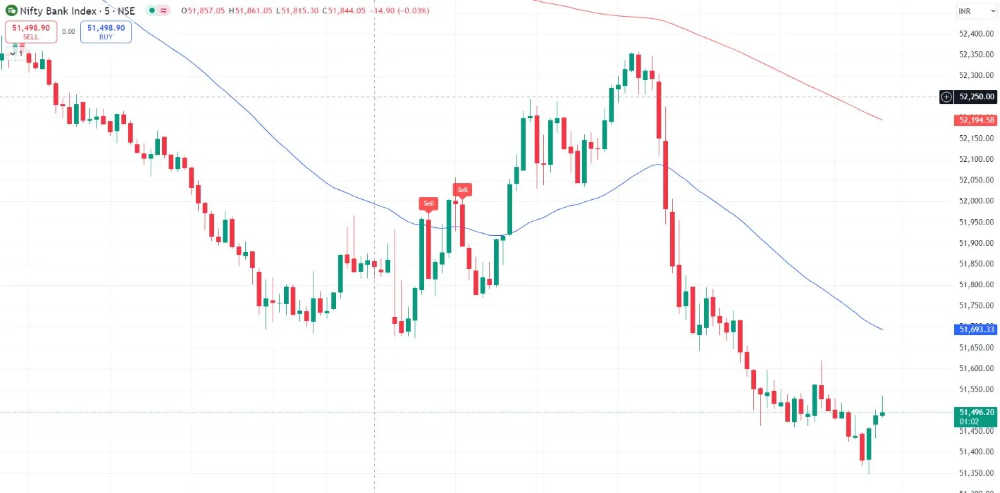

Table of Content
- 1. What is Nifty?
- i) Key Features of Nifty
- 2. What is Bank Nifty?
- i) Key Features of Bank Nifty
- 3. What is Gift Nifty?
- i) Key Features of Gift Nifty
- 4. Nifty, Bank Nifty and Gift Nifty unknown Details and Features
- Conclusion
- Frequently Asked Questions
What is Gift Nifty, Nifty and Banknifty indices and Their hidden features
Gift Nifty, Nifty and Banknifty are important indices for investors in the Indian stock market. Understanding these indices can help traders and investors make better investment decisions. While Nifty gives a broader view of the market, Bank Nifty focuses specifically on the banking sector and Gift Nifty offers unique advantages for global trading.
What is Nifty?
Nifty is short for Nifty 50, an index that represents the top 50 companies listed on the National Stock Exchange (NSE) of India. It is a way to measure how well the Indian stock market is doing overall.
Key Features of Nifty
1. Market Capitalization
Nifty is calculated based on the market capitalization of the companies in the index. This means the bigger companies like Reliance Industries have a bigger effect on Nifty's movement than smaller companies. If a share like Reliance Industries good performance, it can boost the entire Nifty.
2. Sector Representation
The Nifty Fifty has stocks across a wide range of sectors like technology, banking, healthcare and finance companies. This sector helps investors get a long view of the economy.
3. Dynamic Index
The companies in Nifty can change. If any company’s performance is poor over time, it can be replaced by a better-performing company in top 50 companies.
4. Trading Hours
Nifty is traded on the NSE during its trading hours, which are typically from 9:15 AM to 3:30 PM IST.
5. Trading
Investors can trade based on Nifty through futures and options, allowing them to trading on whether the index will go up or down.
6. Investment Tool
Investors use Nifty as a benchmark. They compare the performance of their investments against Nifty to see if they are doing better or worse than the overall market.
What is Bank Nifty?
Bank Nifty is another index that specifically focuses on the banking sector in India. It includes the top 12 banks listed on the NSE. This index provides into how well the banking industry is performing.
Key Features of Bank Nifty
1. Sector-Specific
Since it focuses on banks, Bank Nifty is an excellent way to the health of the banking sector, which is crucial for the Indian economy. If banks are doing well, it often means businesses and consumers are borrowing and spending more.
2. Volatility
Bank stocks can be quite volatile due to factors like interest rate changes, regulatory news and economic conditions. Bank Nifty can show quick movements, which can be both a risk and an opportunity for traders.
3. Components
Bank Nifty consists of major banks like State Bank of India, ICICI Bank, HDFC Bank, Axis Bank and so more. These banks important role play in the Indian Economy.
4. Trading Options
Just like Nifty, Bank Nifty also has options and futures trading available, allowing traders to tread on future price movements or hedge their investments.
What is Gift Nifty?
Design by FreepikGift Nifty refers to trading Nifty futures on the GIFT City (Gujarat International Finance Tec-City) Exchange. This exchange was created to boost international trading and investments in India.
Key Features of Gift Nifty
1. Global Trading
Gift Nifty allows international investors to trade Nifty futures at any time, which is different from the regular trading hours of the Indian stock market. This opens up opportunities for traders and investors worldwide market.
2. Time Zone Advantage
Since GIFT City operates in a different time zone, it allows traders to react quickly to global market changes without being limited by Indian trading hours.
3. Investment Options
Gift Nifty provides a platform for various financial products, including futures and options, allowing for a wide range of trading strategies.
Nifty, Bank Nifty and Gift Nifty unknown Details and Features
1. Free-Float Market Capitalization
Nifty and Bank Nifty are calculated using free-float market capitalization, which means only the shares available for trading are considered. This excludes shares held by promoters, which can give a clearer picture of market sentiment.
2. Volatility Index (VIX)
The Nifty VIX measures market volatility and investor sentiment. A high VIX indicates fear or uncertainty in the market, while a low VIX suggests stability. This can be an essential tool for traders to understand market dynamics.

3. Historical Data Analysis
Analysing historical performance of Nifty and Bank Nifty can reveal trends and patterns. Many investors look at past data to make predictions about future movements. For instance, certain events or economic indicators may consistently lead to price changes.
4. Sectoral Performance
Since Nifty includes various sectors, analysing the performance of these sectors can provide good into where to invest. For example, if the IT sector is doing well, it may indicate a good time to invest in tech stocks.
5. Exchange-Traded Funds (ETFs)
Many Exchange-Traded Funds follow Nifty and Bank Nifty. This allows investors to buy a single fund that represents a collection of stocks in these indices, making it easier to diversify investments without buying individual shares.
6. Impact of Economic Events
Major economic announcements, like interest rate changes or budget presentations, can significantly impact Nifty and Bank Nifty. Keeping an eye on news can help investors anticipate market movements.
7. Relationship with Global Markets
Nifty and Bank Nifty often react to global market trends. For example, if U.S. markets perform well, Nifty may also rise. Understanding this correlation can help investors make informed decisions.
8. Market Sentiment Indicators
Also, VIX and other indicators like the Advance-Decline Ratio can provide insights into market sentiment. A higher number of best stocks compared to decreasing stocks generally indicates a bullish market or up trend.
9. Algo Trading
Many traders use algorithms to trade Nifty and Bank Nifty. These algorithms set by traders and investors can analyse market data and execute auto trades much faster than human traders, providing an edge in volatility.
10. Use of Derivatives
Options and futures on Nifty and Bank Nifty allow traders to hedge risks or safe on price movements. This flexibility attracts many types of traders, from beginners to seasoned professionals.
Conclusion
In summary, Gift Nifty, Nifty and Banknifty are vital indices that help investors understand the Indian stock market. Nifty represents the top 50 companies, Bank Nifty focuses on the banking sector, and Gift Nifty allows for international trading of Nifty futures.
Each index has its own features, and understanding them can provide valuable insights for making informed investment decisions. By exploring the hidden details and market dynamics, investors can enhance their strategies and potentially improve their returns. Also check our Disclaimer page.
Frequently Asked Questions(FAQs)
What is nifty and banknifty stocks
Nifty we all know as nifty 50, an index which contains total 50 company stocks and bank nifty which contains top 12 banking stocks in NSC.
What is GIFT Nifty full form
GIFT Nifty stands for "Gujarat International Finance Tec-City Nifty.
Which country is GIFT Nifty?
GIFT Nifty is based in India, specifically in the Gujarat International Finance Tec-City (GIFT City), which is a financial district located in Gandhinagar, Gujarat.
Who trades in GIFT Nifty?
GIFT Nifty is traded by many market participants example Institutional Investors, Retail Investors, Foreign Investors and many Hedge Funds.